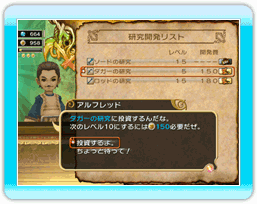

16 |
研究への投資 |
 |
冒険者のためのお店（武器屋・防具屋・道具屋）は、王様が投資をすることで、より強力な武器防具や、より便利な道具を販売するようになります。そして同じ武器や防具でも研究開発することで、より強力なものになっていきます。 また、白魔法学院や黒魔法学校、訓練場といった施設も同様に、アビリティの研究に投資することで、新たな魔法やアビリティが開発され、冒険者がそれを習得できるようになります。 王様は店で買い物をすることはありませんが、新たな武器や防具、魔法の研究にお金を投資して、冒険者を助けることができます。投資は、武器ならソード、ダガー、ロッド、魔法なら回復や炎属性といった種類ごとに行います。 これらの種類は、街に建築した建物の組み合わせなどによっても変化することがあります。 研究開発にお金を投資していくと、回復の魔石などの研究材料が必要になり、これ以上 研究できなくなることがあります。これらの研究材料はダンジョンの奥深くに眠っているため、お金の投資だけでは研究を進められません。 この研究材料の探索を行うのは、もちろん冒険者の役目です。王様から冒険者へおふれを出し、ダンジョンの探索によって研究材料を発見できれば、さらなる研究開発にお金を投資できるようになります。 |
 |
 |
 |